scenarioCompareVariableMass
Variable-mass scenario in the dynamics-engine comparison series (see scenarioCompareOrbit for the introduction).
Where the earlier scenarios hold the spacecraft mass properties fixed, this one lets them change. A spacecraft in a circular orbit performs a prograde orbit-raising burn: a main engine draws propellant from a spherical tank, so the total mass, the tank inertia, and the system center of mass all vary continuously through the burn, while the sloshing propellant reacts to the thrust acceleration.
Modeling choices are deliberately those a GNC analyst would make rather than the ones that maximize the effect:
Engine. A monopropellant thruster, the MOOG Monarc-445, taken from the simIncludeThruster catalog. It is tied to the tank with
addThrusterSetso the burn both applies thrust and consumes propellant, at roughly 0.19 kg/s.Burn. Fifteen minutes of continuous orbit-raising thrust, which expends roughly twelve percent of the propellant.
Tank. A spherical tank sized for hydrazine: 1500 kg in a 0.75 m sphere, sitting at about 85% fill. It uses the centered
FuelTankModelConstantVolumemodel, so its center of mass stays put within the tank and the inertia simply scales with the remaining mass. The tank is mounted aft of the dry-structure center of mass, so as it empties the system center of mass migrates forward along the thrust axis.Attitude. The spacecraft starts velocity-aligned with the corresponding orbital pitch rate, so the body-fixed engine initially points along the velocity vector. No attitude controller or prescribed attitude is modeled; the subsequent attitude follows the passive coupled dynamics.
Balance. Every slosh element’s equilibrium sits at the tank center and the nominal thrust line follows the tank axis. The deliberately seeded lateral slosh displacements offset the instantaneous system center of mass, however, so the initial burn carries a small physical moment. The same offset and thrust geometry are applied in both engines.
Slosh model
The physical first lateral mode is a classical equivalent-mechanical model parameterized from Dodge, The New “Dynamic Behavior of Liquids in Moving Containers” (SwRI, 2000). For a spherical tank at this fill the mode carries about a third of the propellant. It is represented by a two-degree-of-freedom C++ Module: sphericalPendulum hinged at the tank center and hanging aft.
Three orthogonal C++ Module: linearSpringMassDamper particles are additional benchmarking fixtures, not independent physical slosh modes. They ensure that the comparison exercises both Basilisk slosh effectors and their MuJoCo slide- and hinge-joint counterparts. Their mass is removed from the non-sloshing portion so the propellant budget closes. Every particle depletes proportionally with the tank.
Note
The physical pendulum mode uses the bare-wall damping ratio 0.0026, and the benchmark spring-mass-dampers use the same ratio. Both engines represent the spherical pendulum with two angular coordinates. Basilisk applies a viscous force at the bob through the rod moment arm, \({\bf l}\times(-d\,{\bf l}')\); the MuJoCo model applies the corresponding generalized torques to its two hinges. A real hydrazine tank would carry baffles or a diaphragm and damp one to two orders of magnitude harder.
Running it
python3 scenarioCompareVariableMass.py
The scenario builds the same vehicle two ways and overlays them: the back-substitution
C++ Module: spacecraft (BSM, used as the plotting baseline) and the MuJoCo
MJScene. Two switches on run() control what is compared:
useThruster(default True) fires the engine; set False to deplete via an equivalent prescribed leak rate with no thrust force, isolating pure mass loss.inOrbit(default True) flies the burn under Earth gravity; set False for a deep-space burn from rest, which removes gravity as a variable and isolates the variable-mass dynamics.
On the MuJoCo side, depletion is imposed by feeding each body’s derivativeMassPropertiesInMsg a
constant mass-rate (their sum is the engine mass flow), matched to the BSM tank’s proportional
depletion. Gravity (C++ Module: NBodyGravity) is applied to every massive body so the tree is in
free-fall. The BSM’s system-CoM point gravity produces no internal gravity-gradient load, whereas
MuJoCo’s per-body point gravity does; thrust and the explicit spring or pendulum laws provide the
remaining internal restoring forces.
The BSM tank uses setUpdateOnly(True). Under that convention both engines apply the same
nozzle thrust, integrate the retained component masses, and update their instantaneous centers of
mass and inertias. They omit the additional depletion-rate forces and torques caused by the
changing mass distribution and by momentum carried away through an offset nozzle as the
spacecraft rotates. They also do not resolve transport from a specified tank pickup through a
feed path. This is an instantaneous-property model rather than a momentum-closed open-system
model. No empirical cross-engine correction torque is applied.
What the comparison shows
The two engines agree on the depleting masses to grams and track the same rigid-body and slosh states under the shared instantaneous-property convention. The controlled variants separate two effects:
In orbit, differential point gravity. BSM applies gravity once at the system center of mass; MuJoCo applies one point force at each body center. The separated forces exert a net torque about the system center of mass. Neither treatment resolves gravity variation inside a rigid body.
In deep space, the common variable-mass convention. Removing gravity tests only depletion, thrust, and internal slosh. The full case measures the mapping between BSM’s translational and spherical-pendulum effectors and MuJoCo’s slide and hinge joints, without a fitted external load. The
test_variable_mass_deep_space_numerical_agreementregression test also collapses the slosh masses and initial displacement to a rigid limit, where the engines agree to numerical precision.
The pendulum damping is an internal generalized force in both engines. Motors on the two MuJoCo hinges apply the torques corresponding to the BSM bob damping force, so the child and parent receive equal and opposite torques. Applying the same torque only at a body site would remove angular momentum from the vehicle and would not match BSM.
Illustration of Simulation Results
Each output file contains one plotting axis. Overlay and difference plots are stored separately. The burn raises the orbit and draws the tank down. Both engines predict the same qualitative rise and the same total system mass (dry hub plus depleting propellant), with the mass difference staying at the gram level. Their final semi-major axes differ by about 825 m after 900 seconds, or 0.34 percent of the roughly 243 km BSM orbit rise. The deep-space control and forcing-scale estimate indicate that the different gravity application points dominate this residual: BSM applies point gravity at the system center of mass, while MuJoCo applies it to each body.
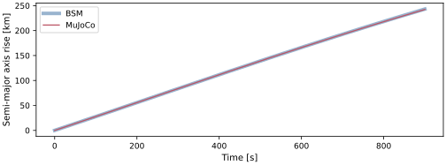
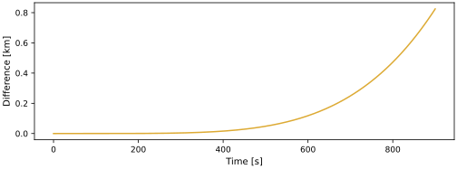
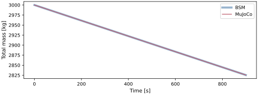
The hub body-rate and translational-slosh components are shown separately. The initial rate equals the orbital pitch rate; it then evolves passively with the slosh motion. Both engines overlay and the differences stay small.
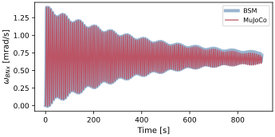
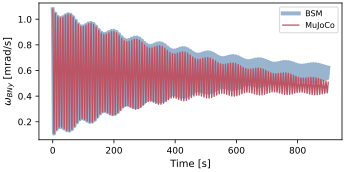
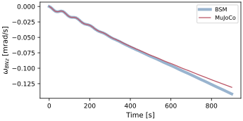
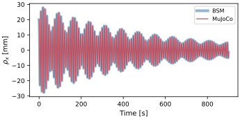
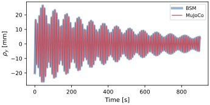
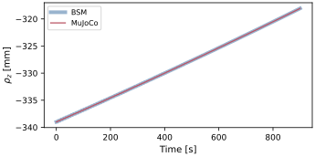
The attitude and center-of-mass figures show the remaining cross-engine difference over the burn.
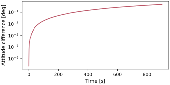
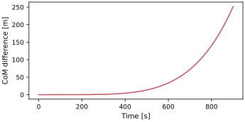
Runtime cost
Wall-clock propagation cost is reported as the median of five interleaved trials after one discarded warm-up; model construction and recorder setup are excluded.
Generate the optional local CSV with
make -C docs comparison-runtime-tables; see
scenarioCompareOrbit for the benchmark requirements and interpretation.
Next comparison: scenarioCompareParetoRwPanels evaluates accuracy against runtime across fixed-step and adaptive integrators.
- scenarioCompareVariableMass.bodyMassFlowRates(nearRigid=False)[source]
Constant per-body propellant mass-flow rates for the MuJoCo depletion wiring [kg/s].
On the BSM side the fuel tank depletes its own bulk mass and every attached slosh particle proportionally to their current mass, so the mass fractions are exact invariants and each body drains at a constant rate equal to its initial mass fraction times the total mass flow (see
pullBSM()). MuJoCo has no equivalent coupling, so the same schedule is reproduced directly: each body is given a constant, negative mass-rate feeding itsderivativeMassPropertiesInMsg, and the rates sum to the engine’s total mass flow.- Returns:
body name -> mass-rate [kg/s] (negative), for
tankand the four slosh bodies.- Return type:
dict
- scenarioCompareVariableMass.buildBSM(dt, record, useThruster=True, inOrbit=True, simDuration=900.0, nearRigid=False)[source]
Build (and initialize) the back-substitution variable-mass reference simulation.
- Parameters:
dt (float) – integrator time step [s]
record (bool) – if True, attach the hub-state, fuel-tank and slosh recorders
useThruster (bool, optional) – if True, deplete the tank with the firing main engine that also applies thrust. If False, deplete it with an equivalent prescribed leak rate and no thrust force. Defaults to True.
inOrbit (bool, optional) – if True (default) fly the burn on the circular parking orbit under point-mass Earth gravity. If False, run the identical vehicle as a deep-space burn with no gravity field and starting from rest, which removes the gravity-model difference so the two engines agree within the stated acceptance tolerances (see
run()).simDuration (float, optional) – requested propagation horizon [s]. The thruster command remains active for at least this duration. Defaults to
SIM_DURATION.nearRigid (bool, optional) – if True, retain the same model topology with negligible slosh masses and zero residual slosh. Defaults to False.
- Returns:
(scSim, recorders, handles)whererecordersis a dict of the attached recorders (empty whenrecordis False) andhandleskeeps the created modules and stand-alone messages alive.- Return type:
tuple
- scenarioCompareVariableMass.buildMujoco(dt, record, initialState, useThruster=True, inOrbit=True, pendulumBobInertia=0.0001, nearRigid=False)[source]
Build (and initialize) the MuJoCo variable-mass simulation.
The MJCF tree from
mujocoModel()is fixed-mass; this function layers on the depletion (a constant mass-rate per body, frombodyMassFlowRates()), the point-mass gravity on every body, and the thrust (a constantSingleActuatorMsgon themainEnginemotor, omitted whenuseThrusteris False) – see the module docstring for why each is done this way. Two build Initial conditions are all set afterInitializeSimulationand taken frominitialStateso both engines start identically.- Parameters:
dt (float) – integrator time step [s]
record (bool) – if True, attach the hub-state, system-center-of-mass and slosh recorders
initialState (dict) – initial
r_BN_N[m],v_BN_N[m/s],sigma_BNandomega_BN_B[rad/s] of the hub-origin frame, taken from the BSM reference so both engines start from the identical state.useThruster (bool, optional) – if True (default) fire the main engine; if False, deplete with no thrust force, matching the
useThruster=FalseBSM leak-rate reference.inOrbit (bool, optional) – if True (default) add the point-mass gravity field; if False, omit it for the deep-space burn, matching
buildBSM().pendulumBobInertia (float, optional) – initial MuJoCo bob inertia about each centroidal axis [kg*m^2]. Defaults to
PEND_BOB_INERTIA.nearRigid (bool, optional) – if True, use the negligible-mass slosh control configuration. Defaults to False.
- Returns:
(scSim, recorders, handles)matchingbuildBSM().- Return type:
tuple
- scenarioCompareVariableMass.earthMu()[source]
Earth gravitational parameter [m^3/s^2], from the same body the sim uses.
- scenarioCompareVariableMass.gravityGradientRateEstimate(mu)[source]
Standard gravity-gradient angular-acceleration scale
3 (mu/r^3) dI/I[rad/s^2].This is the order-of-magnitude rate at which the MuJoCo hub attitude (per-body gravity, which carries a gravity-gradient torque) departs from the BSM hub attitude (single-point gravity at the system center of mass, which does not). The inertia spread is dominated by the tank and propellant mounted an arm
TANK_R_TB_Boff the hub center of mass.- Parameters:
mu (float) – gravitational parameter [m^3/s^2]
- Returns:
angular-acceleration scale [rad/s^2].
- Return type:
float
- scenarioCompareVariableMass.initialOrbitState(mu)[source]
Initial inertial position and velocity on the circular parking orbit.
- Parameters:
mu (float) – gravitational parameter [m^3/s^2]
- Returns:
(rN [m], vN [m/s])as numpy arrays.- Return type:
tuple
- scenarioCompareVariableMass.initialThrustTorqueAboutCoM(maxThrust=None, nearRigid=False)[source]
Return the initial body-frame thrust moment about the wet-system center of mass.
- scenarioCompareVariableMass.mujocoModel(pendulumBobInertia=0.0001, nearRigid=False)[source]
Return the MJCF model of the variable-mass vehicle for the MJScene.
The tree mirrors the BSM effector stack: a free-floating
hubcarries a rigidly weldedtankbody (the non-sloshing propellant mass m0), threeslide-jointed spring-mass-damper particles, and a two-hinge pendulum bob hanging aft along the settling axis. Asiteon the hub marks the main-engine application point, and amotoracting on it applies the thrust along the body +z axis.The masses written here are the INITIAL propellant masses. MuJoCo fixes body mass and inertia at model-compile time, so the depletion is layered on in
buildMujoco()by feeding each propellant body’s mass-rate into itsderivativeMassPropertiesInMsg: MJScene integrates the per-body mass as a state and rescales the body inertia (linearly, with the center of mass fixed) every step. That matches theFuelTankModelConstantVolumelaw on the BSM side, where the tank inertia is(2/5) m r^2about a fixed centroid.- Parameters:
pendulumBobInertia (float, optional) – initial MuJoCo bob inertia about each centroidal axis [kg*m^2]. MuJoCo requires this value to be positive; the BSM pendulum treats the bob as a point mass. Defaults to
PEND_BOB_INERTIA.nearRigid (bool, optional) – if True, use the negligible-mass slosh control configuration. Defaults to False.
- Returns:
MJCF XML string.
- Return type:
str
- scenarioCompareVariableMass.nominalMassFlow(maxThrust, steadyIsp)[source]
Nominal propellant mass-flow rate of the engine [kg/s].
- Parameters:
maxThrust (float) – engine thrust [N]
steadyIsp (float) – specific impulse [s]
- Returns:
mass flow rate [kg/s].
- Return type:
float
- scenarioCompareVariableMass.plotResults(bsm, mj=None, inOrbit=True, figureStem='scenarioCompareVariableMass')[source]
Build the scenario figures.
The BSM curves are drawn as thick translucent underlays and the MuJoCo curves as thin lines on top, so the two engines stay distinguishable where they overlap. A dedicated figure shows the cross-engine attitude difference: in orbit it is dominated by the gravity-gradient torque the two gravity models treat differently; in deep space it measures the residual under the shared instantaneous-property and internal-damping conventions.
- Parameters:
bsm (dict) – BSM reference histories from
pullBSM()mj (dict, optional) – MuJoCo histories from
pullMujoco(), or None when MuJoCo is unavailableinOrbit (bool, optional) – whether the run was on orbit. Selects the first figure between the orbit-raise plot (in orbit) and the burn-speed plot (deep space).
figureStem (str, optional) – output-name prefix, used to distinguish orbit and deep-space runs.
- Returns:
mapping from figure name to matplotlib figure.
- Return type:
dict
- scenarioCompareVariableMass.pullBSM(recorders, mu)[source]
Collect the BSM reference histories into a plain dictionary of numpy arrays.
- Parameters:
recorders (dict) – the recorder dict returned by
buildBSM()mu (float) – gravitational parameter [m^3/s^2]
- Returns:
time, hub state, orbit, tank mass and slosh-state histories.
- Return type:
dict
- scenarioCompareVariableMass.pullMujoco(recorders, mu)[source]
Collect the MuJoCo histories into a dictionary matching
pullBSM().The hub-origin frame is read from the free-joint site, the system center of mass from C++ Module: MJSystemCoM, and the propellant masses and slosh displacements from the per-body mass and slide-joint recorders. The total system mass is summed from the dry hub and the recorded depleting propellant-body masses, the direct analogue of the BSM
totalMass.- Parameters:
recorders (dict) – the recorder dict returned by
buildMujoco()mu (float) – gravitational parameter [m^3/s^2]
- Returns:
time, hub state, system-center-of-mass orbit, mass and slosh histories.
- Return type:
dict
- scenarioCompareVariableMass.relativePrincipalAngle(sigmaA, sigmaB)[source]
Per-sample principal rotation angle between two MRP attitude histories.
- Parameters:
sigmaA (numpy.ndarray) – first MRP history, shape
(N, 3)sigmaB (numpy.ndarray) – second MRP history, shape
(N, 3)
- Returns:
principal angle per sample [rad].
- Return type:
numpy.ndarray
- scenarioCompareVariableMass.run(showPlots=False, saveJson=False, simDuration=900.0, useThruster=True, inOrbit=True, saveReference=False, saveTiming=False, nearRigid=False, resultsDir=None)[source]
Main function, see scenario description.
- Parameters:
showPlots (bool, optional) – if True, plot and show the simulation results. Defaults to False.
saveJson (bool, optional) – if True, write scalar comparison metrics to
results/scenarioCompareVariableMass.jsonin orbit orresults/scenarioCompareVariableMass_deepSpace.jsonin deep space. Defaults to False.simDuration (float, optional) – burn/comparison window [s]. Defaults to
SIM_DURATION.useThruster (bool, optional) – if True (default) deplete the tank with the firing main engine. If False, use an equivalent prescribed leak rate with no thrust force.
inOrbit (bool, optional) – if True (default) fly under Earth gravity (engines separate by the gravity gradient); if False, run a deep-space burn from rest that isolates the shared instantaneous-property depletion and internal slosh model.
saveReference (bool, optional) – if True, write the BSM ground-truth trajectory to
results/scenarioCompareVariableMass_reference.npz. Defaults to False.saveTiming (bool, optional) – if True, measure the BSM-vs-MJScene wall-clock cost with the selected MuJoCo model and write
results/scenarioCompareVariableMass_runtime.csv. Defaults to False.nearRigid (bool, optional) – if True, retain the same topology with negligible slosh masses and zero residual slosh. This control is available only in deep space. Defaults to False.
resultsDir (str, optional) – explicit artifact directory. Defaults to the scenario
resultsfolder.
- Returns:
mapping from figure name to matplotlib figure.
- Return type:
dict
- scenarioCompareVariableMass.sloshParameters(nearRigid=False)[source]
Derive the slosh model inputs from the literature ratios and the vehicle sizing.
The pendulum is the primary element: its arm length is purely geometric, so its frequency
omega1 = sqrt(a/L1)emerges from the thrust acceleration rather than being an input. The spring-mass-dampers are then tuned to that same physical slosh frequency, so the benchmarking fixture at least oscillates at the right rate.- Returns:
slosh masses [kg], pendulum arm [m], slosh frequency [rad/s], spring constant [N/m], damping coefficients, the axial particle’s settled offset [m], and the tank fill fraction [-].
- Return type:
dict
- scenarioCompareVariableMass.thrusterSpec()[source]
Return the catalog
(MaxThrust [N], steadyIsp [s])of the modeled engine.
- scenarioCompareVariableMass.timeStep()[source]
Integrator step that resolves the slosh oscillation [s].
- scenarioCompareVariableMass.velocityAlignedAttitude(rN, vN, mu)[source]
Body attitude and instantaneous rate aligned with the velocity vector at the epoch.
The body frame is built with z along the velocity (the thrust axis), y along the orbit normal, and x completing the triad. The derivative of this alignment at the epoch is a pitch about the orbit normal at the orbital rate, which in body components is purely about the body y-axis. No controller maintains the alignment during propagation.
- Parameters:
rN (numpy.ndarray) – inertial position [m]
vN (numpy.ndarray) – inertial velocity [m/s]
mu (float) – gravitational parameter [m^3/s^2]
- Returns:
(sigma_BN, omega_BN_B [rad/s], meanMotion [rad/s]).- Return type:
tuple